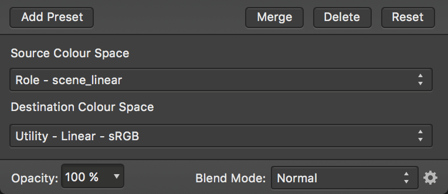

In addition to 32-bit editing support, Affinity Designer also implements OpenColorIO; a color management system that provides a full color-managed workflow. It is predominantly used for motion picture production but can be used for any situation where accurate end-to-end color management is required.
By default, Designer's OpenColorIO features are not immediately usable. An .ocio configuration file is required alongside a number of supporting files such as lookup tables.
The OpenColorIO website (http://www.opencolorio.org) contains some sample configurations that provide a number of suitable input and output profiles, including several Academy Color (ACES) configurations.
OpenColorIO is exposed through two methods:
